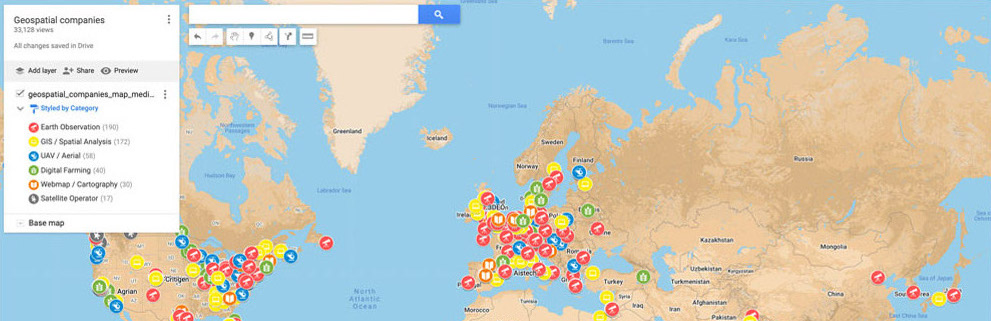
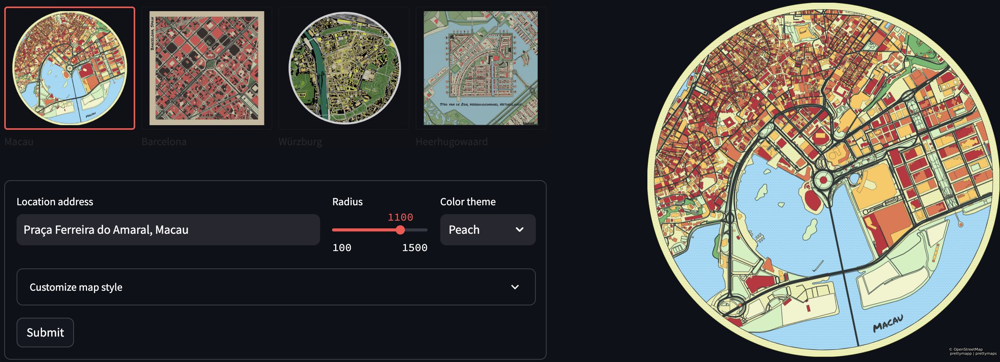
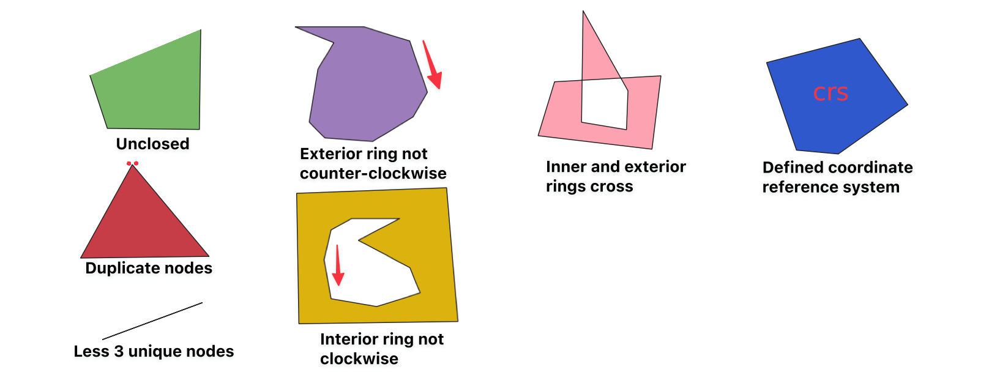
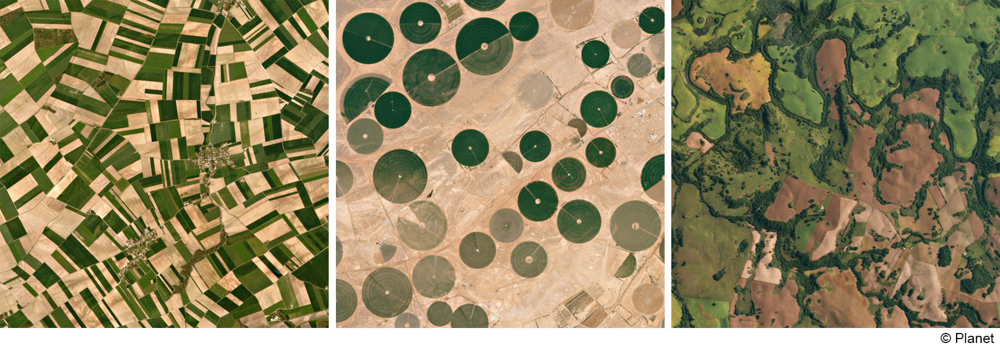
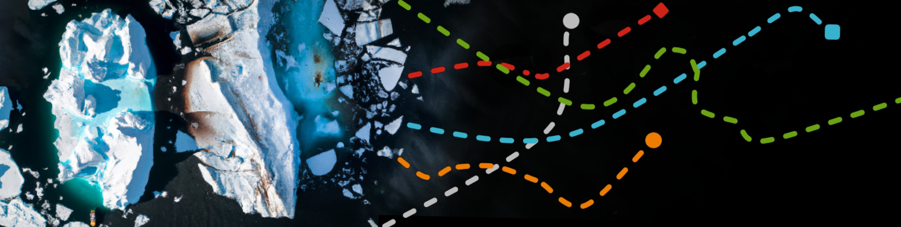
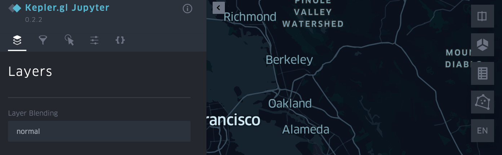

List of 500+ geospatial companies with interactive map, from over 70 countries! Categories earth observation, GIS, catography, UAV, Digital Farming etc.

Webapp and Python package to create beautiful maps from OpenStreetMap data.
Webapp • Repository • PyPi
Validate GeoJSON and automatically fix invalid geometries. Like geojsonhint, but with geometry checks & fixes! Use the Webapp or as a Python package! 1) 🔴 Detects invalid geometries & 🟢 fixes them : Unclosed, wrong winding order etc. 2) 🟨 Problematic geometries (for many tools & APIs): Self-intersection, crossing anti-meridian etc. 3) Checks 🧬 structure according to GeoJSON specification.

List of GeoJSON invalid geometry issues with example files. Ever encountered an invalid geometry error when dealing with GeoJSON? Even if a GeoJSON conforms to the GeoJSON specification, some tools or APIs might have issues with it. This repo shows the common issues when handling GeoJSON geometries and how to fix them.

This thesis aims to delineate agricultural field parcels from satellite images via deep learning instance segmentation. A fully convolutional instance segmentation architecture (adapted from Li et al., 2016), was trained on Sentinel-2 image data and corresponding agricultural field polygons from Denmark. In contrast to many other approaches, the model operates on raw RGB images without significant pre- and post-processing.
List of aerial and satellite imagery datasets with annotations for computer vision and deep learning. Archived.
A mkdocs plugin for excluding selected files or sections from the search index. Mkdocs is a static site generator that's geared towards building project documentation.

Weekly iceberg locations (2014-today) in a single file hosted on AWS S3. Updated on a weekly basis via a scheduled AWS lambda function - from the US National Ice Center (USNIC).

Streamlit component for rendering kepler.gl maps in a streamlit app.